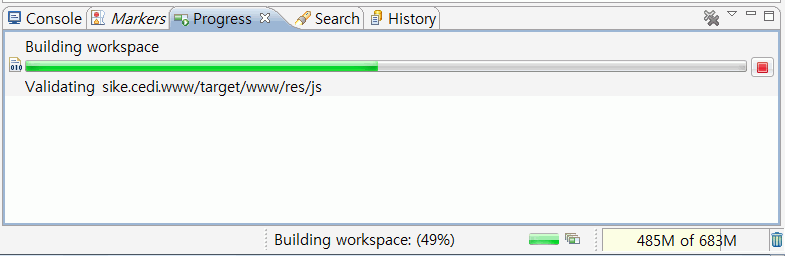
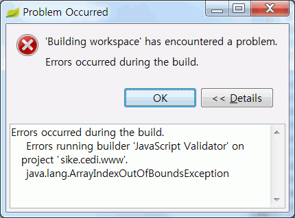
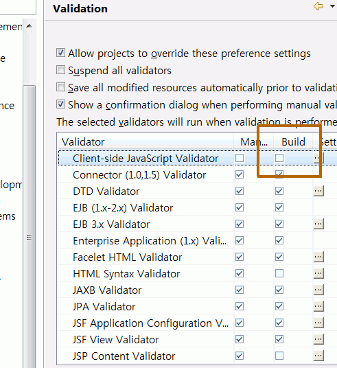
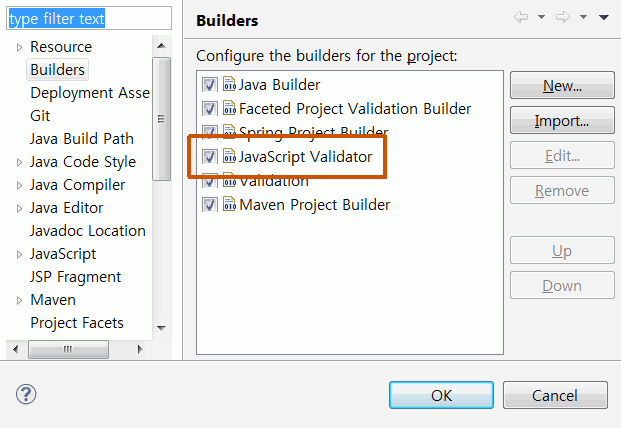

이클립스(Eclipse)나 스프링 STS를 사용하다보면 수시로 "Building workspace (00%)"와 같은 절차가 진행된다. 이클립스 하단 상태 표시줄에 한참을 표시되면서 사람 복장 터지게 만드는 그것.
엊그제 STS 3.3을 사용하는데 예를 들어 57%에서 멈춘 후 계속 진행되지 않는 현상이 발생했다. 그전엔 그런 적이 없는데… 5분을 기다려도 10분을 기다려도 딴 짓하고 와도 진행되질 않는다. 취소하고 이클립스를 종료해도 다시 나타나고 강제로 죽이고 이클립스를 재실행해도 또 나타나고 꼭 57%에서 멈추는 것이다! 심지어 워크스페이스를 다시 만들어봤다. 이러면 모든 설정이나 구성 내역이 사라지고 다시 시작하는 거니까 문제가 사라져야 되는 거 아닌가?
이번엔 49%에서 멈췄다. 역시 이클립스를 종료할 때도, 강제로 죽이고 다시 시작할 때도 나타났다.

컴퓨터가 뭐에 씌었나보다는 생각까지 들었다.
그래서 다음 수순으로 STS를 다른 버전으로 받아보았다. 그 전엔 이클립스 4.3 기반의 STS 3.3이었고 새로 3.8 기반의 STS를 받아서 깔았다.

이번엔 현상이 바뀌었다. 멈추진 않지만 뭔 오류가 자꾸 난다. 자바스크립트 Validator에서? 도대체 이런 오류가 왜 나는 거지? 내가 그런 건 아니잖아??
가만 생각해보면 자바스크립트 검증은 별 필요가 없다. 자바스크립트는 비교적 구문이 자유로와서 세미콜론을 안붙여도 되고 클로져 같은 변수 때문에 변수 선언시 정의가 안됐는데도 그 아래서 바로 사용하는 것처럼 보이는 경우가 자주 있다. 그런데 이클립스 검증 결과를 보면 엉뚱한 경고나 오류가 자주 뜬다.
그래서 자바스크립트 검증기를 끄기로 했다. 평소 검증을 끄기 때문에 당연히 꺼졌을 거라고 생각했고 Window > Preferences > Validation을 확인해보니 역시나 꺼져 있다.

그런데 왜 자꾸 자바스크립트 검증을 하지?? 프로젝트별 설정이 따로 있어서 그런가? 여태 그런 게 있는 걸 못봤는데… 하지만 프로젝트 설정을 열고 하나씩 살펴보니…

드디어 범인을 찾았다. 왜 멈추거나 오류가 발생하는지는 알 수 없지만 이 자바스크립트 검증기를 끔으로써 모든 문제가 해결됐다. 빌딩 시간도 단축되고 일석이조라 할 수 있다.
자바스크립트 검증은 별다른 이점 없이 해로운 점만 많다고 할 수 있다. 프로젝트하다가 Building workspace에 시간을 많이 뺐긴다면 그걸 끄는 걸 고려해보도록 하라!
댓글
댓글을 불러오는 중입니다.